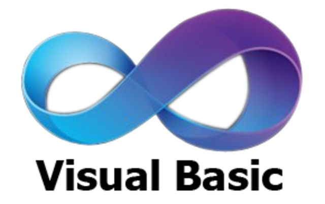

Hablemos de Visual Basic
Visual Basic (VB) es un lenguaje de programación dirigido por eventos. Desarrollado por Alan Cooper para Microsoft, este lenguaje de programación es un dialecto de BASIC con importantes agregados. Su primera versión fue presentada en 1991, con la intención de simplificar la programación utilizando un ambiente de desarrollo.
Se utiliza para crear aplicaciones con interfaces gráficas de usuario (GUI) fácilmente. Es parte del paquete de herramientas de desarrollo de Microsoft y ha sido muy popular entre programadores novatos y profesionales.
Tabla de versiones en Visual Basic
| Versión | Año | Características |
|---|---|---|
| VB 1.0 | 1991 | Primera versión lanzada por Microsoft |
| VB.NET | 2002 | Integración con .NET Framework |